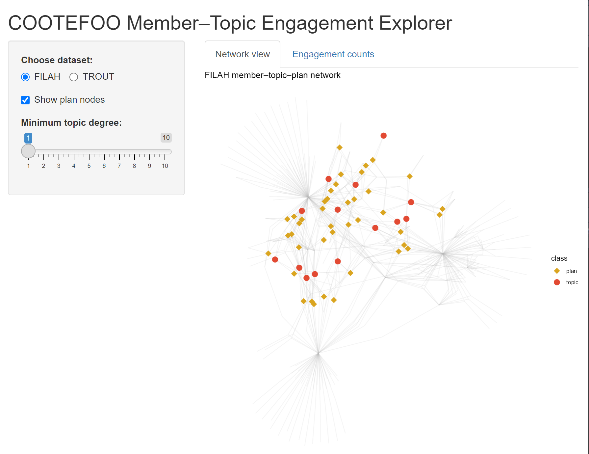
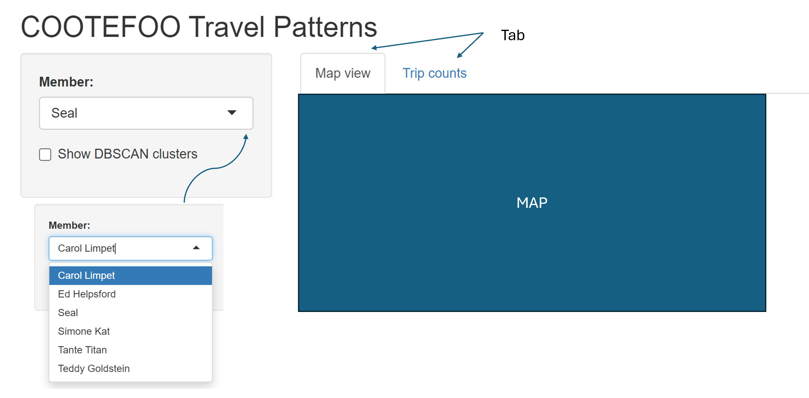
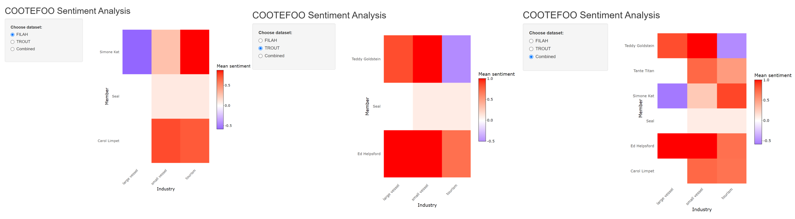
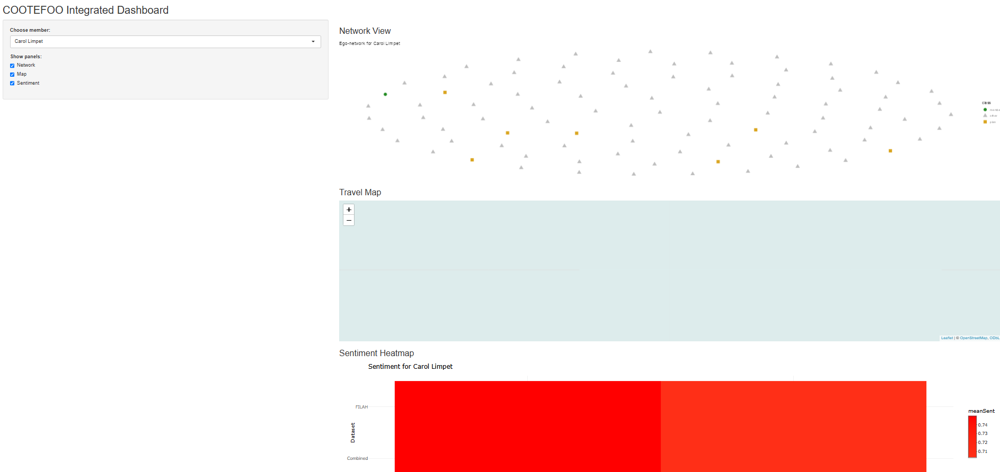
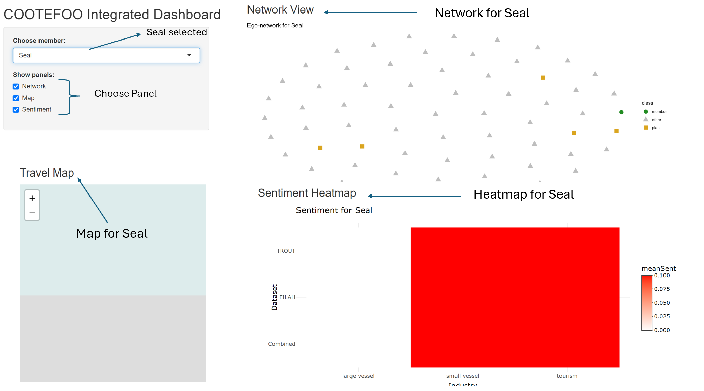

| Analytical Stage | Original Quarto Visualisation | Enhanced Shiny Interactive Visualisation |
|---|---|---|
| Initial Accusations (Engagement) | Static density/bar charts | Interactive node-link network and interactive bar/dot charts |
| Spatial Bias (Travel Patterns) | Static jitter/network plots | Interactive leaflet map with clustering, filters and interactive trip counts |
| Sentiment Analysis | Single static heatmap | Interactive triple-panel heatmaps with drill-down comments and delta sentiment measures |
| Integrated Personal Analysis | Single static ego network (Seal) | Fully integrated interactive dashboard (network, map, sentiment heat-bar, detailed evidence tables), explicitly illustrating bias distortions |
Take-Home Exercise 3
Take Home Exercise 3
Link to VAST Challenge 2025, Mini-Challenge 2.
Interactive Exploration of COOTEFOO Bias: A Shiny Application Storyboard
Background and Context
Oceanus, a small island nation, has historically relied on a robust fishing-based economy. In recent years, however, tourism has begun rapidly expanding, significantly reshaping local economic dynamics. To guide this complex transition responsibly, the government established the Commission on Overseeing the Economic Future of Oceanus (COOTEFOO). This appointed oversight board, while lacking direct legislative power, holds substantial influence and funding, entrusted to evaluate economic trends objectively and advise accordingly.
COOTEFOO’s role, however, has come under intense scrutiny. Two vocal advocacy groups have recently accused the board of deep-seated biases:
Fishing is Living and Heritage (FILAH) claims COOTEFOO is overly biased towards promoting tourism, neglecting the island’s historical economic foundation in fishing.
Conversely, Tourism Raises OceanUs Together (TROUT) argues COOTEFOO remains stubbornly loyal to fishing interests, effectively ignoring lucrative opportunities offered by tourism.
In response to these competing accusations, investigative journalist Edwina Darling Moray (E.D.) of the Haacklee Herald obtained the datasets provided by both FILAH and TROUT, containing detailed meeting minutes and travel records for COOTEFOO members. Moray also secured additional evidence beyond what either advocacy group had compiled. After initial data cleaning and knowledge-graph creation by a staff programmer, these datasets were prepared for analysis.
Investigative Narrative: Shiny Application
The interactive Shiny visualisation tool is structured to guide Moray through four distinct yet closely connected analytical stages. Each stage builds logically upon the previous, forming a coherent investigative narrative that progressively deepens understanding and systematically evaluates accusations of bias.
Stage 1: Initial Claims - Examining Individual Sources (FILAH & TROUT)
Moray’s investigation begins by evaluating the datasets from TROUT and FILAH separately. Is there intrinsic evidence of bias within each group’s own records?
Visualisation

A force-directed node-link diagram (ggraph) explicitly illustrates relationships among COOTEFOO members, discussion topics (fishing/tourism), and plans. Nodes and edges coloured by industry reveal patterns of engagement.
Interactive bar charts quantify exactly how much each member engages with fishing vs tourism topics, highlighting asymmetric attention and possible echo chambers.
Sidebar Controls
Choose dataset:
Toggles which advocacy group’s data you’re exploring.
FILAH shows the “Fishing Is Living and Heritage” graph, TROUT would swap in “Tourism Raises OceanUs Together.”
Show plan nodes:
When checked, you see golden-rod diamonds representing individual policy or action plans discussed by members.
Unchecking hides those diamonds so you focus purely on member–topic links.
Minimum topic degree (slider = 1):
Filters out topics with fewer than n member connections.
At “1,” all topics appear. Sliding up to, say, “3” would remove topics discussed by fewer than three members, decluttering the graph.
Insights and Links to Next Stage:
Through this visualisation, Moray explicitly identifies preliminary biases. Members notably skewed toward one industry become focal points in subsequent analyses. The biases identified here set expectations for travel patterns explored in Stage 2, allowing Moray to test whether members’ stated interests match their real-world actions.
Stage 2: Spatial Bias - Where Do COOTEFOO Members Actually Go?
Having identified initial biases in member engagement, Moray next integrates all available records (FILAH, TROUT, additional data) to examine COOTEFOO’s official travel activities. Do their physical travels reinforce or contradict biases observed in Stage 1?
Visualisation

An interactive map (leaflet) clearly displays official COOTEFOO travel locations, explicitly marking fishing-related visits (blue markers) versus tourism-related visits (orange markers).
DBSCAN clusters explicitly identify spatial “echo chambers” or regions consistently favoured, coloured and labelled by industry type.
An accompanying interactive stacked bar chart summarises trips per member by industry, explicitly linking real-world actions to biases identified in Stage 1.
Insights and Links to Next Stage:
Moray explicitly compares observed travel behaviour against initial engagement biases. Spatial clusters reinforce or challenge perceived biases from discussions, preparing Moray to further quantify the emotional and ideological tone behind these activities in Stage 3.
Stage 3: Sentiment Analysis - Quantifying Emotional Tone and Bias
With clear insights into engagement and travel, Moray now examines the underlying emotional tone of COOTEFOO members’ recorded comments across the fishing and tourism contexts. Critically, Moray needs to understand how missing records from FILAH and TROUT distort or shift perceptions when compared with the combined complete dataset.
Visualisation

Three interactive sentiment heatmaps (plotly) explicitly compare average sentiment (negative to positive) for each member across FILAH, TROUT, and the comprehensive combined dataset.
Interactive drill-down capabilities let Moray explicitly explore detailed comments underpinning sentiment scores, providing transparency and context.
Delta bars explicitly quantify changes in sentiment scores when merging additional data, indicating whether initial accusations from TROUT and FILAH become strengthened, weakened, or unchanged.
Insights and Links to Final Stage:
This sentiment analysis explicitly reveals how initial biases from incomplete datasets are reshaped by comprehensive evidence. Members experiencing significant sentiment shifts become key figures in the detailed personal investigations undertaken in Stage 4.
Stage 4: Integrated Dashboard - Deep Dive into Individual Members and Evidence Gaps
Finally, Moray needs precise, personalised analysis, clearly seeing how specific members’ reputations are influenced by missing or incomplete evidence. The integrated dashboard consolidates insights from previous stages, explicitly highlighting how datasets from TROUT and FILAH distorted perceptions.
Visualisation:

An integrated, interactive dashboard explicitly combines network engagement (Stage 1), travel locations (Stage 2), and sentiment (Stage 3) into a cohesive investigative tool.
Moray selects any COOTEFOO member (defaulting explicitly to one TROUT-accused member, e.g., Seal) to synchronously update visualisations:
Ego-centric network graph explicitly visualises relationships and missing evidence.
Interactive map explicitly shows detailed travel history, highlighting trips missing from individual advocacy datasets.
Sentiment heat-bar explicitly illustrates sentiment shifts between datasets, clearly quantifying bias distortions.
Detailed evidence tables explicitly list exact records (plans, discussions, trips) omitted from TROUT/FILAH, clearly revealing critical missing evidence that significantly impacts judgements.
Illustrative Example (Seal, accused by TROUT):
Moray explicitly observes how TROUT’s incomplete evidence falsely portrays Seal as neutral. The combined data clearly reveals significant additional tourism-related activities and positive sentiment, explicitly undermining TROUT’s accusation and demonstrating precisely how missing records distort the narrative.
